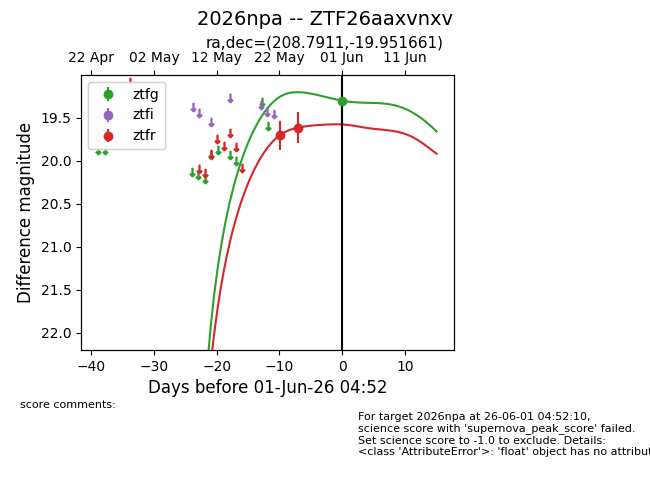
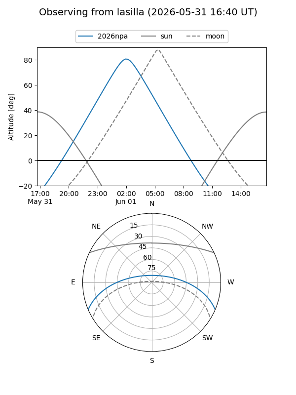
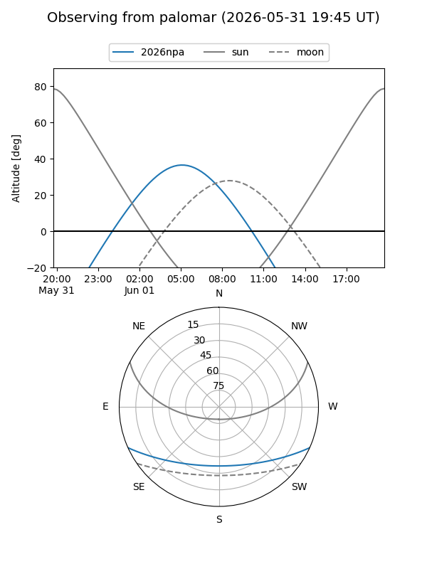
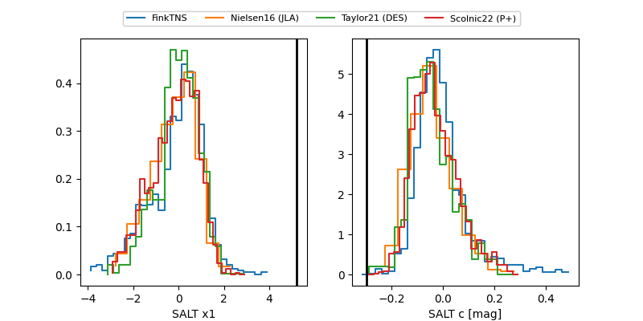

2026npa
Target 2026npa at 2026-06-01 04:53
Aliases and brokers:
lsst-FINK: link
lsst-Lasair: link
lsst-ALeRCE: link
ztf-FINK: link
ztf-Lasair: link
ztf-ALeRCE: link
TNS: link
YSE: link
alt names
ZTF26aaxvnxv (ztf,fink_ztf)
2026npa (tns,yse)
Coordinates:
equatorial (ra, dec) = 208.7911,-19.95166
equatorial (HMS+DMS) = 13:55:09.87,-19:57:05.98
galactic (l, b) = (322.7530,+40.45456)
Flags:
TNS confirmed: nan
Photometry:
last ztfg=19.30, ztfr=19.61
1 ztfg, 2 ztfr detections
Lightcurve

Visibility


Additional plots
